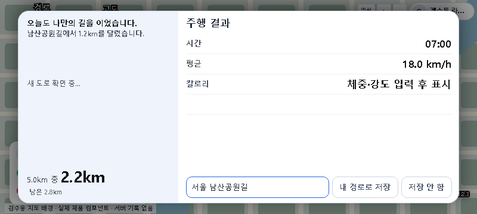
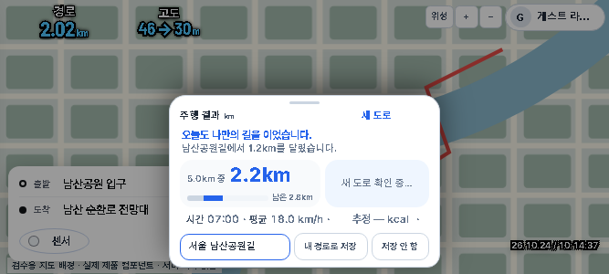
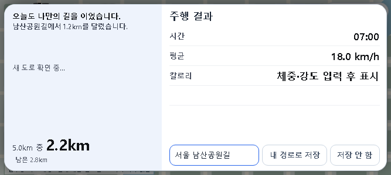
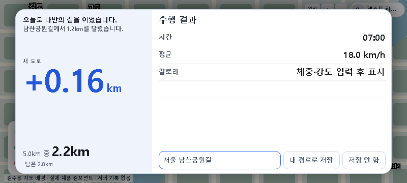
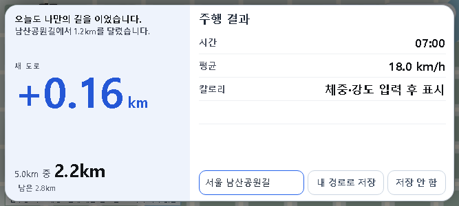
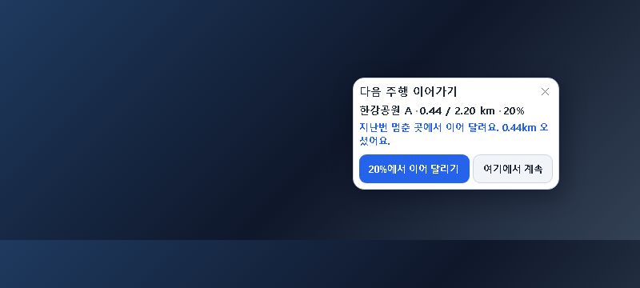
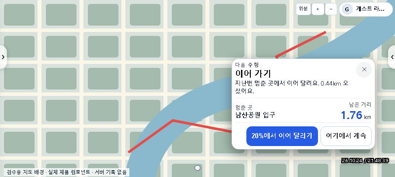
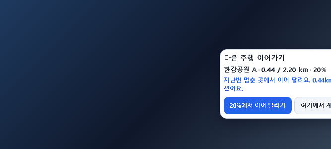
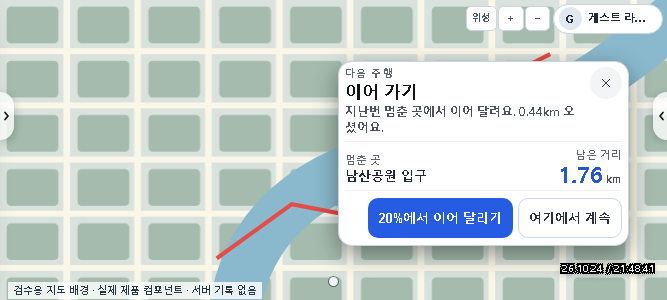

주행 결과 · 다음 주행 — 지시50 재검증
주행 결과는 핵심 성과와 세부 정보로, 다음 주행은 멈춘 곳과 이어갈 행동으로 구분했습니다.
로컬 검토안입니다. 운영에는 주소 카드·S/E 기호·측면 반원 탭까지 배포됐습니다. 아래 결과·다음 주행 개선은 화면 확인 전이며 운영에 배포하지 않았습니다. 변경 후 이미지는 오늘 변경 위에서 Codex가 다시 캡처한 실제 컴포넌트 예시입니다. 화면54개 시나리오는 관련 교정 재검증까지 통과했습니다. 전체 연속 주행 RC1은 위치 안내·닫기 셀렉터 실패가 남아 있습니다. 구현·감리·캡처: Codex 직접.
화면 크기
주행 결과 — 변경 전 / 후





- 새 도로를 주인공으로, 진행 정보는 아래에 배치했습니다.
- 시간·평균 속도·칼로리는 읽기 쉬운 행으로 정렬했습니다.
- 저장·닫기·실패 안내와 기존 행동 조건을 유지했습니다.
새 도로가 확정됐을 때
예시 +0.16 km: 시험에서 구독 결과만 예시로 제공했습니다. 화면은 실제 결과 컴포넌트이며, 운영 기록을 읽거나 쓰지 않았습니다. 미확정·확정 0·실패 상태에서 이 숫자를 대신 표시하지 않습니다.


다음 주행 — 변경 전 / 후
기존 캡처와 새 캡처의 배경·예시 경로는 다릅니다. 카드의 정보 위계와 조작 배치를 비교해 주세요.




이어달리기·끝점에서 새 경로·지도 보기·숨기기는 기존 조건과 콜백을 유지했습니다. 이어달리기는 경로 준비까지 하며 주행을 자동 시작하지 않습니다.
승인 시안 보기